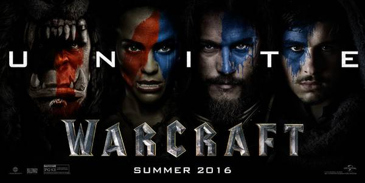
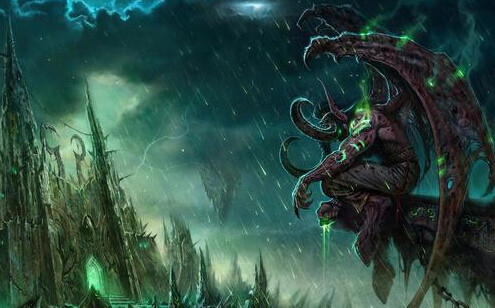
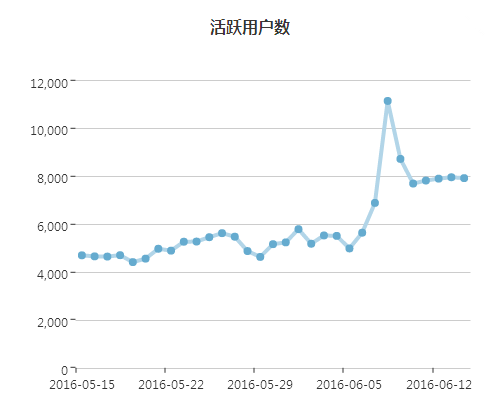

《魔兽》电影后，关于游戏IP能说的几件事
《魔兽》电影，火了！
6月8日凌晨,《魔兽》电影正式上映,狂飙猛进的架势不禁让人发出惊叹，同时也对这一现象表示在情理之中。截至6月13日14:50，电影《魔兽》在中国内地的票房轻松破关10亿元，在影视界实属不俗的战绩。
这部从2006年就开拍的电影，辗转10年，今年我们终于在荧屏上迎接了她的到来，这是一场迟到了十年的《魔兽》聚会。作为史上评价最高的游戏，以电影的形式再度回归，不仅引发了无数游戏玩家“怀念青春”，更是让亿万玩家热血澎湃，这种情怀让它承载了一代人的青春记忆。
《魔兽》IP的简史
暴雪工作室从1994年发售简版《魔兽争霸1：人类与兽人》，随后在1995年-1996年发行了《魔兽争霸2：黑潮》、《魔兽争霸2：黑暗之门》，2002年-2003年发行了《魔兽争霸3：混乱之治》、《魔兽争霸3：冰封王座》，以及将这个游戏系列推上巅峰的《魔兽世界》，逐渐将一个庞大壮丽的史诗完善打磨了出来，讲述着一个经典IP的崛起。
2004年，经过一年时间的开发，暴雪推出了网络游戏《魔兽世界》并在北美等一些国家开发测试，随后2005年6月进入中国市场，从第九城代理至2009代理权最终被网易收入囊中运营至今，那个时候的开发者和运营商们大概想不到，魔兽世界在游戏市场中创造了多个奇迹。2004年全球就有来自224个国家超过1亿的玩家；在2008年基于魔兽玩家像滚雪球一样的增长，截至同年年底付费玩家人数已达到了1150万人，而这个数字也被记录进了吉尼斯纪录大全。需要重点关注的是，在魔兽世界之前，暴雪一直主推的游戏魔兽争霸，在当时，魔兽争霸一度将竞技类游戏推上了空前的高潮，同时引爆了游戏赛事的火爆场面，至今如WCG、IEM联赛等成为了很多国内游戏赛事的参考。
暴雪为何有能力打造魔兽IP的泛娱乐
22年前暴雪工作室大概想象不出它会为玩家带来这样一场银屏盛宴。
2015年下半年根据暴雪公布的数据中，魔兽的付费玩家数为550万，少于巅峰时期付费玩家数的近一半，但是这个数据依然是全球游戏付费玩家排行榜的佼佼者。十余年，因《魔兽世界》而沉淀累计下来的游戏文化和衍生出的周边让我们看到了其质变的结果。
最傲人成绩当属在文字版权方面，暴雪请来的多位作家编剧，以魔兽为背景改编而发行官方小说，其数目多达十几部之多，而在应本次《魔兽》电影剧情改编需要，暴雪找到了美国奇幻作家克里斯蒂、Middot合作，同时，在今年暴雪将继续推出《魔兽世界·编年史》故事系列，以及暴雪版权下的多部官方小说将正式登陆苹果商城及IBOOKS，在文字版权方面进一步完善扩充魔兽IP的剧情背景。
根据游戏剧情联动性，暴雪娱乐联合黑马漫画公司出版《魔兽世界·编年史》官方漫画，此次合作的漫画在业界被誉为历史中小说和漫画联动水准最高的作品。同样由魔兽衍生出的官方游戏音乐会同样受到粉丝的追捧；在漫画和音乐方面魔兽ip同样交出了菲人的好成绩。经过在暴雪官方与广大粉丝的长年推动下，魔兽这个游戏IP已打下了深厚坚实的泛娱乐基础。
据ThinkingGame提供的一组数据显示，因《魔兽世界》IP元素衍生出来游戏就有数十款，国内的代表有《DOTA2》、《小冰冰传奇》、《我叫MT》系列、《无冬Online》等优秀的游戏文化作品。而魔兽上映后与其有直接关系的《魔兽争霸》、《魔兽世界》等在舆论量曲线图上明显上扬，而在更早时期，通过ThinkingGame提示指出，其“行业指南”中有关“魔兽”这个词的关注度就有明显波动，单指游戏行业媒体的文章数就多达33681篇；同时，通过“魔兽”IP的大体量数据分析的结果得知，这个宏大IP也将给整个游戏市场提供一场多元化的题材辩论。
经典游戏IP的唱本&中国IP的联动环境
目前，电影和游戏已经成为了当下最热门的两种娱乐形态，彼此间的跨界合作展现出巨大的市场潜力。文化产业高度发达的欧美国家不乏影游成功联动的案例。这次《魔兽世界》票房的成功，粉丝的狂热反应是一方面的直观因素，另外一方面，这次的影视制作阵营同样不可忽视，万达联合腾讯、华谊兄弟、太合娱乐作为出品方，投入如此高制作资本阵营，成功似乎也在情理之中。
普遍来说，在电影公司眼中，经典游戏IP的金字招牌配合粉丝经济对票房的催化是非常具有吸引力，这些年好莱坞推出过的作品：《古墓丽影》、《杀手：代号47》、《生化危机》、《拳皇》、《孤胆义侠》等等一大批先驱者，这类影片多数在市场的验证下得到的评价褒贬不一。而那些在影视化过程惨败的经典游戏，失败可能有多种原因造成，但却依然不能阻止经典游戏IP被推上银幕，一方面版权IP的高票房诱惑，另一方面，大部分游戏公司或因品牌扩张，或因玩家的呼声太高，膨胀而强行将作品推上银幕，这种美好的愿景往往在电影上映后如潮的恶评中被淹没。
而反观国内市场，无论是音乐、影视、游戏、小说还是其他何种娱乐形式，得IP者得天下的名言在游戏行业内早已如雷贯耳，2015年影游联动的概念被提出。来自ThinkingGame的数据显示：2016年，行业媒体关于IP的文章数多达3361，被赋予IP元年之称的2015年关于IP的媒体文章数为6764篇，说明IP的价值观并未消退，反而是游戏市场中的另一轮激增的前兆。
从自1995年台湾大宇旗下发行的系列电脑游戏《仙剑奇侠传》到2005年《仙剑奇侠传》电视剧在当年疯狂刷新收视榜收视率直逼当年的《还珠格格》，这部IP的成功，某种程度上甚至改变了一代人。尤其在近年国内的影游联动的IP大放异彩，多部成功的IP耳熟能详《小时代》系列、《古剑奇谭》、《轩辕剑》等由游戏改编的影视作品，以及由影视改编的游戏《花千骨》、《甄嬛传》、《芈月传》等成功。2016年国内尤其以网易、腾讯、游族等一众大厂商将游戏IP概念的势头推上又一个高峰，打造一个具有现象级的IP进行品牌经营的重要性已不言而喻。
如何利用大数据研究强IP的用户心理从而实现价值转化
上世纪90年代，由于游戏的产值不大，版权方对于IP授权往往比较随意，如金庸在1996年就曾一口气将旗下14部小说全部授权给智冠并任其开发《金庸群侠传》。而随着IP价值与价格的水涨船高，出于不同玩家的需求，资本在打造IP核心价值观的战略中，也就不再局限于剧情，而是对IP进行多元衍生，以更多衍生形态，连结粉丝情感，满足不同类型用户需求，这样玩家在产品集群下，和时间的沉淀中，可以拥有更多元的内容体验及对IP符号的加深认知。魔兽有如今的成功除了自身优秀的游戏文化，他们也花了10余年时间的沉淀IP价值。从ThinkingGame提供的另一组用户画像追踪数据曲线表明：
《魔兽世界》玩家在电影上映后出现了一个明显的用户热度峰值，同时媒体关注的热词以10%的占比率跃居榜首，并连续多日居高不下，从上图标中曲线变化我们有理由相信，这次银幕营销的成功，早已脱坑的部分“老”玩家被重新激活，甚至带来一批新用户加入游戏。而通过ThinkingGame监测数以百计的论坛贴吧信息的数据显示，同期与魔兽有关的话题及舆论量也形成了一个激增趋势。这个时候如果网易的工作配合到位，相信复坑的玩家数应该比这个数据曲线更惊人。
话说回来，谈IP开发价值转化的始祖，那一定是好莱坞。无论是产业操作还是艺术创作都十分成熟，其每一部内容开发都是巨资投入，以及漫长的开发过程，试想这样的投入如果没有精准的数据支持，没有长期的用户调研，怎么能保证他们高概率的内容开发能力，据业内人士透露，美国六大电影公司本身就是半个数据公司！因此所有的IP开发都需要数据的支持，而电影成功最关键的因素，三分之二是由前期开发决定。
大数据的价值转化为优秀的IP在感性层面上行更多的提供理性的参考，在国内的数据及技术环境中，大数据服务形式也衍生多样性，社会舆论的数据价值挖掘，能提供给IP开发的指导日趋明显，在大方向上，用户的可视化上，准确地预估作品的市场表现。IP开发者应针对不同消费对象，灵活地设计开发模式和内容形式，从而保证实现价值转化的结果。
文/兔子